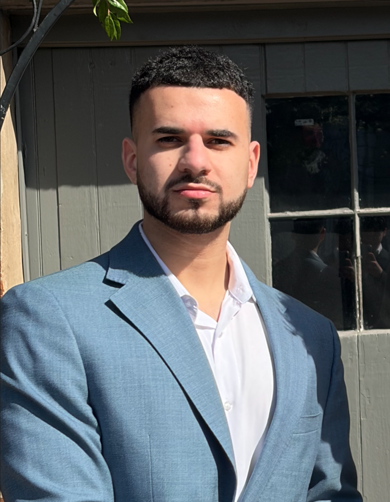
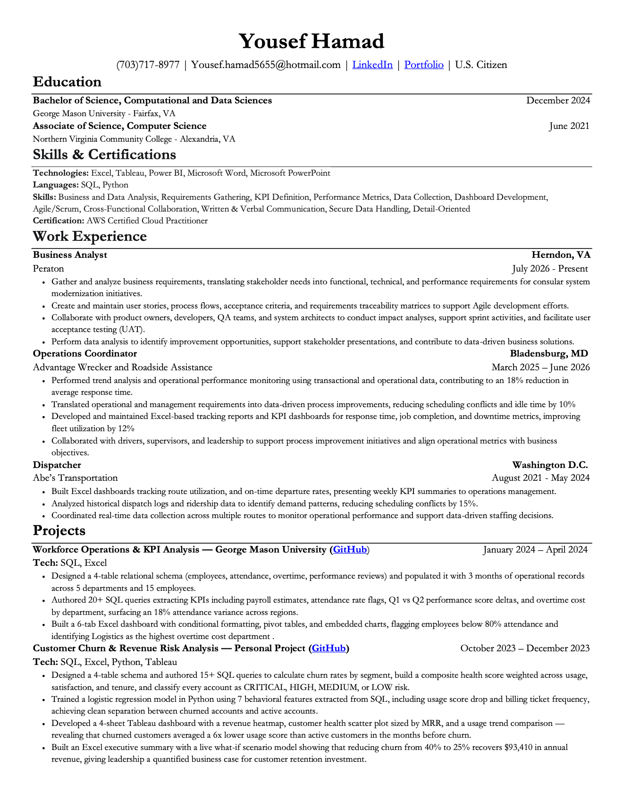

Data Analyst with 3+ years turning operational and client data into decisions. I build end-to-end analytics pipelines — SQL databases, Python models, Tableau dashboards, and Excel scenario tools that give leadership a number to act on.

I'm a Data Analyst with a B.S. in Computational and Data Sciences from George Mason University (December 2024) and an A.S. in Computer Science from NOVA. My work sits at the intersection of operational analytics and business intelligence — taking messy, scattered data and building the infrastructure to make it useful.
At ICF International, I supported federal government analytics engagements using Python, SQL, and Tableau to clean and analyze large client datasets, build KPI reporting tools, and deliver EDA findings that improved reporting efficiency by 5%. At Abe's Transportation, I built a predictive analytics system for shuttle demand forecasting that cut wait times by 15%.
I'm driven by the moment a clean dashboard or a well-structured query turns a vague business question into a decision someone can act on immediately.

A complete end-to-end churn analytics pipeline covering 20 accounts and $46,705 in active MRR. SQL models risk from behavioral data, Python assigns individual churn probability scores via logistic regression, Tableau visualizes the risk landscape, and Excel gives leadership a live scenario model showing the dollar impact of reducing churn.
Normalized MySQL database modeling 5 departments and 15 employees, paired with a 6-tab Excel KPI dashboard surfacing attendance flags, overtime costs, and Q1 vs Q2 performance score trends.
Open to full-time data analyst roles, internships, and conversations about analytics engineering, BI tooling, or operational data strategy.